Curso de Gestión de Proyectos para ONG
Introducción:
- ¿Quién eres?
- ¿A qué te dedicas?
- ¿Cuál es el último proyecto en el que has estado implicado y cuál fue tu papel en él?
Expectativas...
Necesidades de Gestión de Proyectos en ONG:
- Importancia del éxito en los proyectos de desarrollo
- Alta influencia de factores externos
- Gestionar el cambio y las presuposiciones
- Gestionar expectativas volátiles
- Patrones de financiación cambiantes
- Desarrollo frente a Caridad
- Limitaciones presupuestarias
- Liderazgo de Voluntarios
¿Es el Control y Evaluación diferente de la Gestión de Proyectos?
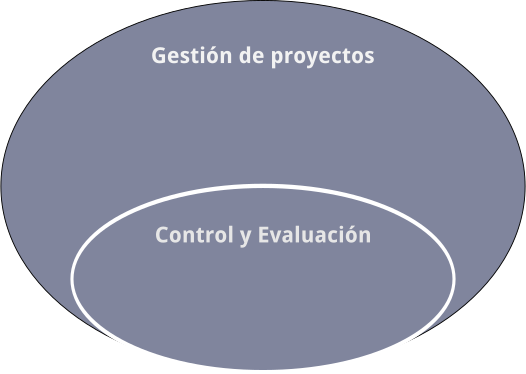Empecemos con unas definiciones:
- Proyecto
- Gestión de proyectos
- Programa
- Portafolio
Proyecto
Un esfuerzo temporal para crear un producto único, un servicio o un resultado.
Tiene un principio y un final
Es único
Consume recursos
Gestión de proyectos
Aplicación de conocimientos, habilidades, herramientas y técnicas a las actividades del proyecto para alcanzar los requisitos establecidos.
... se consigue a través de 5 grupos de procesos: Inicio, Planificación, Ejecución, Supervisión y Control y Cierre
Programa
Un grupo de proyectos relacionados y gestionados de manera coordinada para obtener un beneficio y un control que no se podría obtener gestionándolos de manera individual.
Portafolio
Grupo de proyectos y/o programas y de otros trabajos que se agrupan para facilitar su efectiva gestión de cara a conseguir unos objetivos estratégicos.
Relación entre Proyecto, Programa y Portafolio:
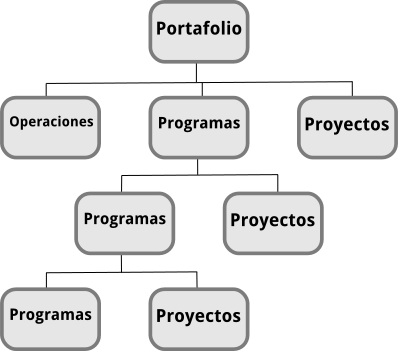El Gestor de Proyectos:
No es miembro del Consejo de Gobierno o Junta de Proyecto
- Responsable:
- ante la Junta del Proyecto...
- de la compleción del proyecto...
- de acuerdo al plan establecido
- Realiza las actividades:
- Planificar
- Organizar recursos y repartir tareas
- Medir e informar del progreso
Interesados del Proyecto
Aquellas personas que o bien están afectadas por los resultados del proyecto o bien pueden afectar a los resultados del proyecto.
ONG, Equipo del proyecto, Beneficiarios del proyecto, Industria, Comunidad, Empleados, Financiadores públicos, Patrocinadores, Voluntarios, Gobierno, Grupos de interés, etc.
Interesados del Proyecto
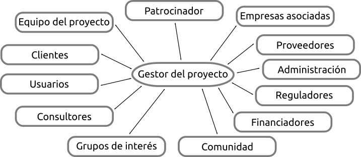Caso de estudio
Elaborar un caso de estudio con identificación de interesados
Grupos de procesos y Áreas de conocimiento
El Ciclo de Vida de todos los Proyectos pasa por cinco Grupos de Procesos: Inicio, Planificación, Ejecución, Supervisión y Control y Cierre
Estos Procesos están agrupados por Áreas de conocimiento: Integración, Alcance, Tiempo, Coste, Calidad, Recursos Humanos, Comunicaciones, Riesgos, Adquisiciones, Interesados
En total hay 47 Procesos repartidos entre los Grupos de procesos y Áreas de conocimiento.
Los cinco Grupos de Procesos son:

Relación entre los Grupos de Procesos
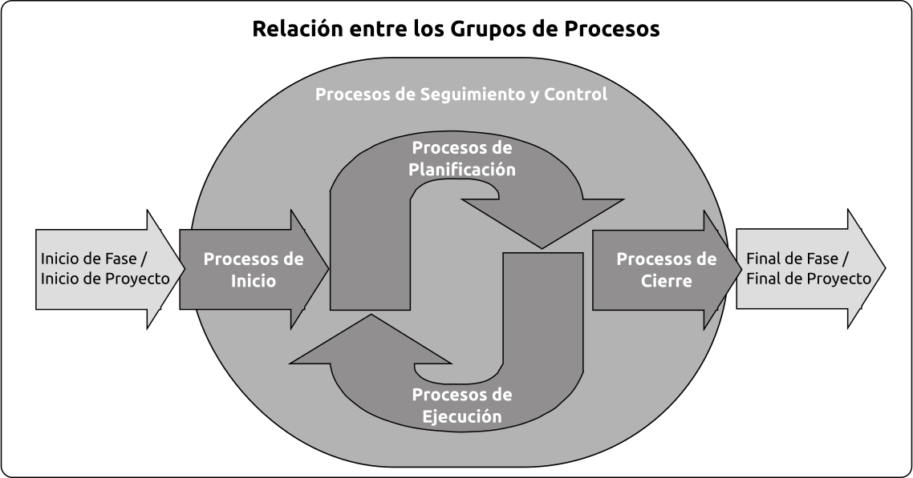Grupos de procesos y Áreas de conocimiento
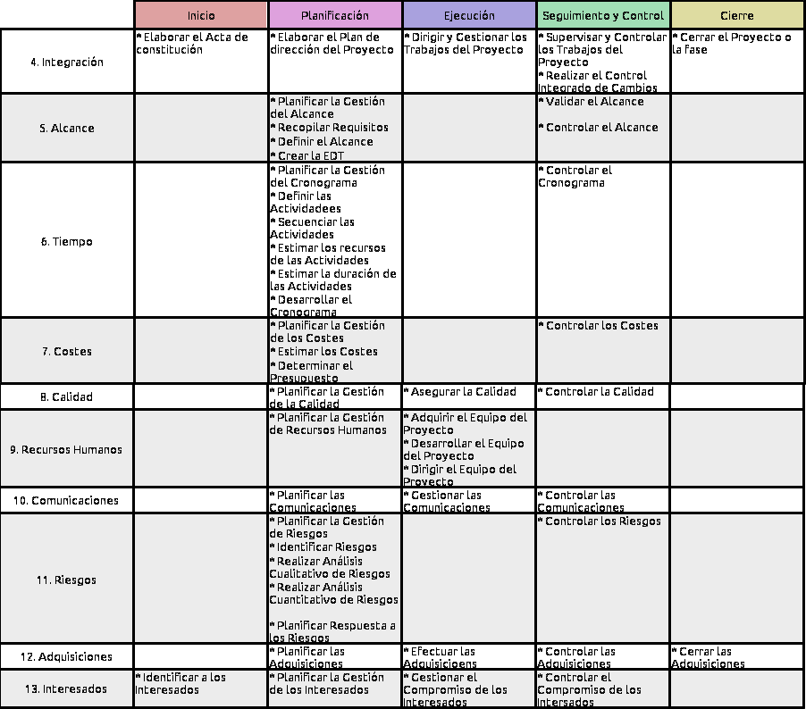Importancia de los Grupos de Procesos
Debemos entender cuáles son los cinco Grupos de Procesos por los que pasan TODOS los proyectos
(lo único que varía entre proyectos es cuanto tiempo pasa en cada Grupo...)
¿Por qué pasar por TODOS los grupos de procesos?
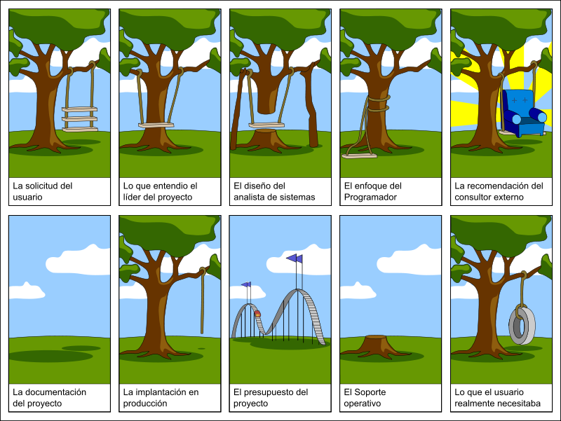 Imagen obtenida de OpenClipArtGrupo de Procesos de Inicio
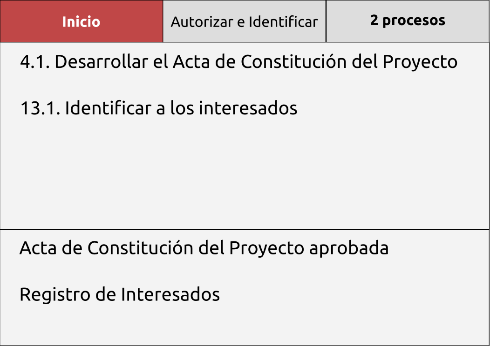4.1. Desarrollar el Acta de Constitución:
- Formalmente autoriza a un proyecto o a una fase de proyecto
- El desarrollo del Acta de Constitución es parte del Área de Conocimiento de Integración
- El Gestor de Proyectos debe ser identificado y asignado tan pronto como el Proyecto sea viable - Preferentemente mientras el Acta aún está en desarrollo
- Los Proyectos pueden ser Constituidos y Autorizados externamente a la organización p.e.: agencias del gobierno, requerimientos legales, desarrollos tecnológicos, necesidades de negocio...
Contenidos del Acta de Constitución:
- Propósito
- Actores principales
- Requisitos básicos y Objetivos
- Restricciones y Supuestos
- Riesgos
- Estructura de Desglose del Trabajo de Alto Nivel
- Estimaciones de Coste
- ...
Autorización por escrito
13.1. Identificar a los Interesados:
- Crear un registro de personas y grupos con capacidad de impacto o afectados por el proyecto
- La identificación de los Interesados es parte del Área de Conocimiento de Gestión de los Interesados
- Los Interesados del Proyecto son aquellos que están involucrados activamente en el mismo y aquellos a cuales sus intereses se van a ver afectados por los resultados, ejecución y compleción del mismo
13.1. Identificar a los Interesados:
- El Gestor de Proyectos debe administrar la influencia de los mismos con respecto a los requisitos para asegurar el éxito del proyecto
- Los Interesados pueden tener una influencia positiva o negativa en el Proyecto
- Los Interesados con influencia negativa suelen ser subestimados por el equipo del proyecto por lo que aumenta el riesgo de que el Proyecto no acabe con éxito
Grupo de Procesos de Planificación
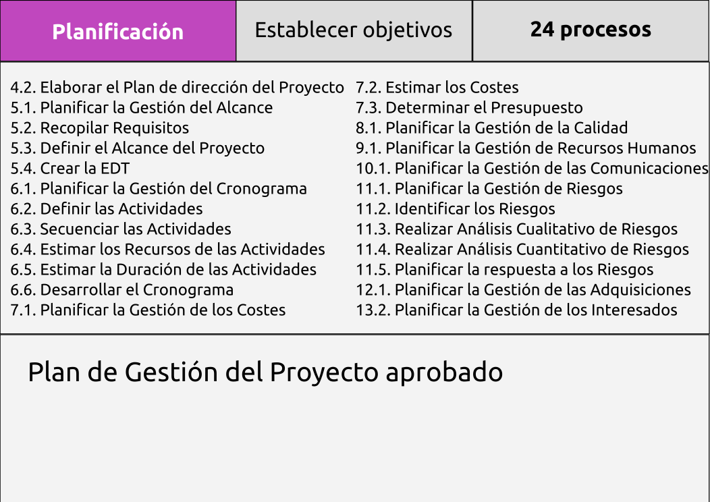Definición
La Planificación en el contexto de la Gestión de Proyectos implica la documentación de acciones necesarias para definir, preparar, integrar y coordinar todos los planes subsidiarios en un Plan de Gestión de Proyecto
Se pueden tener que elaborar hasta 14 planes subsidiarios
Gestión de la Integración del Proyecto
- Desarrollar el Plan de Gestión del Proyecto [4.2.]
- Documento detallado y bien estructurado que define el estilo del Proyecto en sí mismo
- Asegura la Integración a lo largo del proyecto
- Controla el cambio de manera efectiva
- Puede actualizarse en actividades de planificación iterativas
Gestión del Alcance del Proyecto:
- Durante la planificación, el Alcance se define y describe de manera minuciosa ya que se tiene más información sobre el propio Proyecto
- Planificar la Gestión del Alcance [5.1.]
- Recolección de Requisitos [5.2.]
- Definición del Alcance [5.3.]
- Creación de la Estructura de Desglose del Trabajo (EDT) [5.4.]
EDT:
- Identificar los Entregables y el trabajo relacionado
- Estructuración y organización de la EDT
- Descomposición de los niveles superiores en componentes de menor nivel
- Verificar que el grado de descomposición es necesario y suficiente (Los componentes del Proyecto pueden ser productos o servicios)
Resultados de la planificación del Alcance
- Plan de gestión del alcance
- Plan de gestión de requisitos
- Documentación de requisitos
- Línea Base del Alcance
- Enunciado del Alcance
- EDT
- Diccionario de la EDT
Gestión del Tiempo del Proyecto
- Planificar la Gestión del Tiempo [6.1.]
- Definir las actividades [6.2.]
- Secuenciar las actividades [6.3.]
- Estimar los recursos de las actividades [6.4.]
- Estimar la duración de las actividades [6.5.]
- Desarrollar el Cronograma [6.6.]
Secuenciar las actividades [6.3.]
- De final a principio
- De final a final
- De principio a principio
- De principio a final
Desarrollar el Cronograma [6.6.]
Actividades divergentes: única predecesora con múltiples sucesoras
Actividades convergentes: múltiples predecesoras con una única sucesora
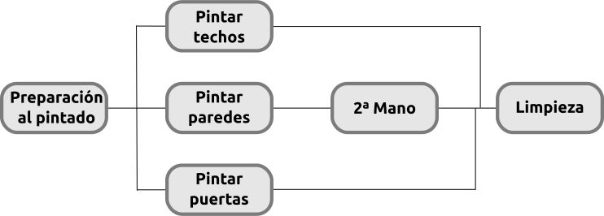Conceptos claves de gestión de Cronogramas:
- Crashing
- Fast tracking
- Nivelación de recursos
- Plazo de ejecución
- Adelantos y retrasos
- Soluciones provisionales
Resultados de la planificación del Tiempo
- Plan de gestión del cronograma
- Línea Base del tiempo
- Datos del cronograma
Gestión del Coste del Proyecto
- Planificar la Gestión de Costes [7.1.]
- Estimar Costes [7.2.]
- Variables
- Fijos
- Directos
- Indirectos
- Determinar el presupuesto [7.3.]
Herramientas de Coste y Presupuesto:
- Estimación análoga (Top-Down)
- Estimación paramétrica
- Estimación ascendente (Bottom-Up)
- Estimación por tres puntos
- Análisis de reservas
- Coste de la calidad
Esquema del presupuesto
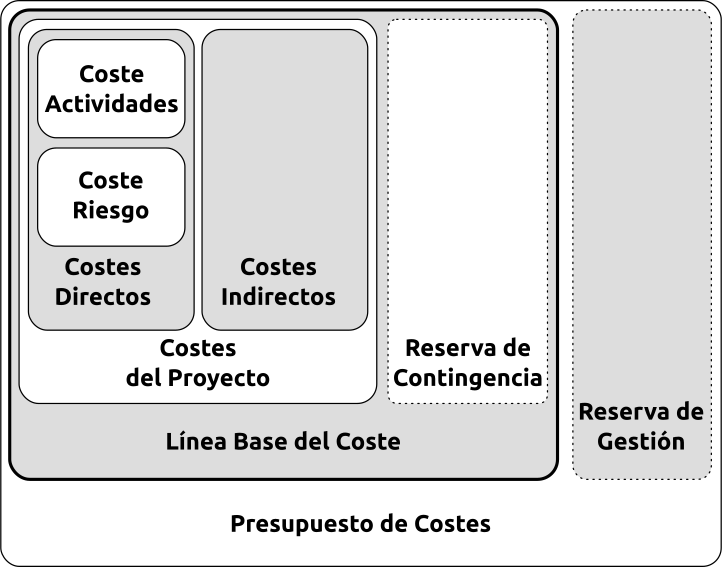Ingeniería del Valor
La Ingeniería del Valor es una aproximación sistémica a encontrar la forma menos costosa de completar el mismo trabajo
Los Gestores de Proyectos la practican constantemente: eligen el mejor recurso para completar el trabajo, de la manera más rápida y con la mejor calidad y manteniendo el coste total del Proyecto bajo control
Resultados de la Planificación de Costes
- Plan de gestión del coste
- Línea Base del coste
- Requisitos de financiación del Proyecto
Gestión de la Calidad del Proyecto
- Planificar la Gestión de la calidad Calidad [8.1.]:
- Usando Análisis de Coste / Beneficio (evitando el «chapado en oro» que puede disparar los costes sin reportar beneficios al cliente)
- Aplicando prácticas de Marcas de Referencia (comparando proyectos entre si).
El Grado y la Calidad no son lo mismo
- La baja Calidad es un problema pero el bajo Grado no tiene porqué
- La Calidad es completar un Requisito
- Pueden haber distintos grados de Calidad
Resultados de la Planificación de Calidad
- Plan de gestión de la calidad
- Plan de mejora de procesos
- Métricas de calidad
- Listas de chequeo de la calidad
Gestión de Recursos Humanos del Proyecto
- Planificar la Gestión de Recursos Humanos [9.1.]:
- Identificar perfiles, roles, responsabilidades, competencias, etc
- Identificar las restricciones del Proyecto:
- Estructura de la organización
- Acuerdos de negociación colectiva
- Contratación de personal
- Normativa vigente
- Identificar necesidades de formación, recompensas, etc
Resultados de la planificación de Recursos Humanos
- Plan de gestión de recurso humanos
- Roles y Responsabilidades
- Organigramas del Proyecto
- Plan de gestión del personal
- Matrices de Asignación de Responsabilidades (RAM)
Gestión de las Comunicaciones del Proyecto
- Planificar la Gestión de las Comunicaciones [10.1.]
- Hay que entender qué debe ser comunicado, a quién y con qué frecuencia
- El Gestor de Proyectos debe gastar gran parte de su tiempo comunicándose
El Plan de Comunicación depende de:
- Requisitos de información de los interesados
- Listado de emisores / listado de receptores
- Tecnologías de comunicación
- Modelo de comunicación
- Emisor / Receptor / Mensaje / Ruido
- Pautas de comunicación
- Método de comunicación
- Push / Pull / Interactivo
Resultados de la planificación de las Comunicaciones
- Plan de gestión de las comunicaciones
- Requisitos de información
- Paquetes de información y frecuencia
- Recursos, métodos y canales
- Diagramas de flujo de información
- Matriz de distribución de información
- Restricciones de comunicación
Gestión de los Riesgos
- Planificar la gestión de Riesgos [11.1.]
- Identificar los Riesgos [11.2.]
- Realizar el Análisis Cualitativo de los Riesgos [11.3.]
- Realizar el Análisis Cuantitativo de los Riesgos [11.4.]
Planificar la gestión de Riesgos [11.1.]
- Se emplean
- Enunciado del alcance
- Planes de Costes / Tiempo y Comunicaciones
- Registro de interesados
- Se genera el Plan de Gestión de Riesgos
- Metodología a emplear y acciones
- Roles y responsabilidades
- Presupuestos y reservas
- Mediciones y tolerancias
Todos los miembros de un Proyecto deberían colaborar en la identificación de Riesgos
Identificar los Riesgos [11.2.]:
El resultado es el Registro de Riesgos
- Herramientas para la identificación de Riesgos:
- Lluvia de ideas
- Técnica Delphi
- Entrevistas
- Análisis DAFO
Registro de Riesgos
- Lista de riesgos identificados
- Causas comunes de riesgos
- Disparadores de riesgos
- Lista de posibles respuestas
Realizar el Análisis Cualitativo de los Riesgos [11.3.]
- Establecer Prioridades entre Objetivos
- Calcular Probabilidad e Impacto: Severidad
- ¡Los Riesgos positivos son Oportunidades!

Realizar el Análisis Cuantitativo de los Riesgos
El Análisis Cuantitativo se realiza SOLO en los Riesgos que se hayan priorizado en el Análisis Cuantitativo por potencialmente ser de impacto para el Proyecto
- Las herramientas pueden ser:
- Análisis de Sensibilidad
- Modelos y simulaciones (Monte Carlo)
- Evaluación del Valor Monetario Esperado
- Árboles de decisión
Resultados de la planificación de los Riesgos
- Plan de gestión de Riesgos
- Registro de riesgos
Gestión de las Adquisiciones del Proyecto
- Planificar las Adquisiciones [12.1.]
- La decisión es si hay que «hacer o comprar»
- Se alcanza por juicio de expertos, investigaciones de mercado, reuniones...
- Revisar el riesgo inherente a cada decisión
- Revisar cada tipo de contrato para mitigar riesgos
Resultados de la planificación de las Adquisiciones
- Plan de gestión de las adquisiciones
- Enunciado de las adquisiciones
- Descripción del producto
- Parámetros de entrega
- Documentos de las adquisiciones
- Criterios de selección
Gestión de los Interesados
- Planificar la Gestión de los Interesados [13.2.]
- Identificar niveles de compromiso y participación
- Interrelaciones y conflictos
- Requisitos de comunicación
- Información a distribuir a cada interesado
Resultado de la planificación de la gestión de los Interesados
- Plan de gestión de los interesados
Grupo de Procesos de Planificación
Un último consejo:
No hay ningún sustituto a la documentación Siempre hay que documentar
Grupo de Procesos de Ejecución y de Seguimiento y Control
SEPARAR EJECUCION DE SyC
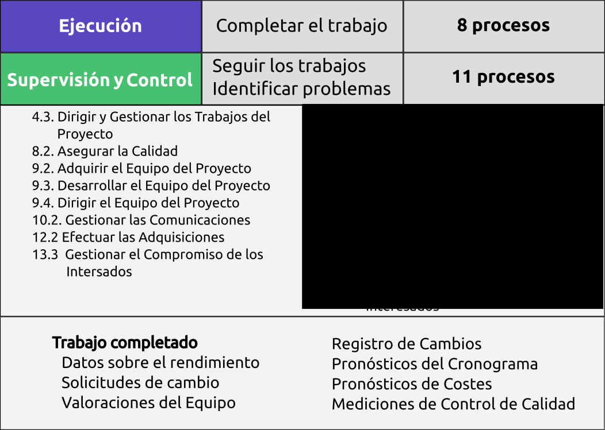Grupos de Procesos de Ejecución:
El Grupo de Procesos de Ejecución consiste en los Procesos que se realizan para completar el trabajo definido en el Plan de Gestión del Proyecto para satisfacer las especificaciones del Proyecto
- Dirigir y Gestionar los Trabajos del Proyecto [4.3.]
- Realizar el Aseguramiento de la Calidad [8.2.]
- Adquirir el Equipo del Proyecto [9.2.]
- Desarrollar el Equipo del Proyecto [9.3.]
- Dirigir el Equipo del Proyecto [9.4.]
- Distribuir información [10.3.]
- Efectuar las Adquisiciones [12.2.]
- Gestionar el Compromiso de los Interesados [13.3.]
Antes de ponerse a ejecutar
- Estructura de Desglose del Trabajo
- Línea Base del Tiempo
- Línea Base del Coste
- Plan de Gestión de la Calidad
- Plan de Gestión de Recursos Humanos
- Plan de Gestión de Comunicaciones
- Riesgos Identificados
- Plan de Gestión de Adquisiciones
Recursos Humanos
Entradas
- Plan de gestión de recurso humanos
- Roles y Responsabilidades
- Organigramas del Proyecto
- Plan de gestión del personal
- Matrices RAM
Matriz RASCI
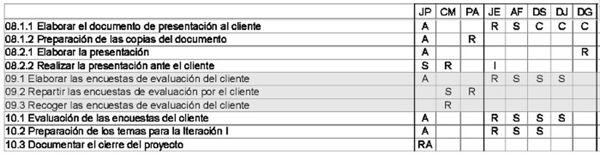
|
|
Adquiriendo el equipo [9.2.]
- Recursos:
- Asignaciones previas
- Relaciones previas con el proyecto
- Negociación
- Con otras organizaciones, equipos, etc
- Adquisición
- Contrataciones o subcontrataciones
- Equipos virtuales
- A través de comunicaciones digitales
- Requiere gran planificación de comunicaciones
- Análisis multicriterio
- Permite tomar decisiones de forma más adecuada
Adquiriendo el equipo
- Los equipos pueden no resultar como se planifican:
- Afectan los Riesgos, el Cronograma, el Coste, las Comunicaciones, todo se debe tener en cuenta
- Además también hay que tener en cuenta otras opciones: legales, regulaciones, obligaciones que deben vigilarse
Desarrollando el equipo [9.3.]
- Objetivos del Desarrollo del Equipo:
- Alinear esfuerzos
- Facilitar el trabajo a los demás
- Efecto Medicci
- Conseguir lealtad al proyecto
- Generar y aumentar confianza
Desarrollando el equipo
- Recursos:
- Habilidades interpersonales
- Formación
- Team Building
- Reglas básicas
- War Room
- Reconocimientos y recompensas
- Valoración del personal
Desarrollando el equipo
Liderazgo situacional
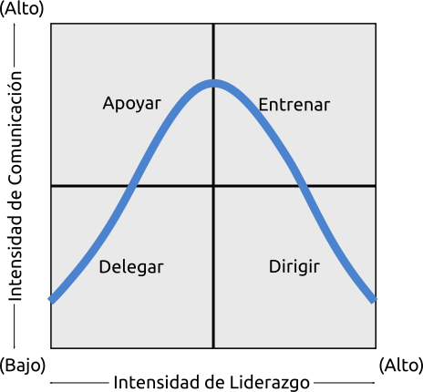Dirigir el Equipo del Proyecto [9.4.]
- Recursos:
- Observación y Conversación
- Evaluaciones de rendimiento
- Resolución de conflictos
- Habilidades interpersonales
Dirigir el Equipo del Proyecto
- Resolución de conflictos:
- Inevitables entre personas
- Pueden ser beneficiosos
- Resultado del Cambio
- Pueden y deben manejarse
Resolución de conflictos
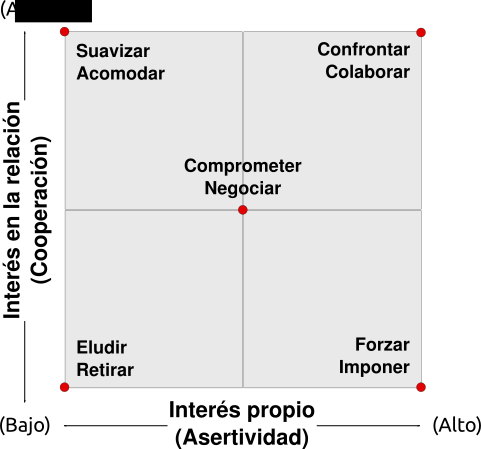¡Cuidado con el efecto Halo!
Se produce cuando la calidad de una persona influencia una decisión
Por ejemplo:
El señor A es una persona con grandes capacidades tecnológicas, por lo que será un buen gestor de proyectos tecnológicos
Solo con estos datos no podríamos afirmar que las habilidades tecnológicas del señor A le vayan a convertir automáticamente en un buen Gestor de Proyectos
¡No hay que dejarse cegar por el Halo!
Comunicaciones
Entradas
- Registro de Interesados
- Plan de Gestión de Interesados
- Requisitos de Comunicación
- Información, formato, lenguaje, frecuencia, niveles
- Miembros del equipo responsables de generar/comunicar información
- Tecnología
- Escalado de información
- Calendario de reuniones
Gestión de las Comunicaciones del Proyecto [10.2.]
- Sistema de Gestión de la Información
- Gestión de documentos impresos
- Cartas, notas, actas, informes, prensa
- Gestión de comunicaciones electrónicas
- Correo, webs, actas, informes
- Herramientas electrónicas de gestión
- Oficinas virtuales, videoconferencias, sistemas de trabajo colaborativo, gestión de proyectos
Reuniones eficientes
- Convocatoria formal y con suficiente antelación
- Propósito y tiempo limitado
- Orden del día y Agenda para cada punto
- Reuniones regulares
- Elección de personas adecuadas
- Informar del papel y la responsabilidad
- Presidente y reglas de Comportamiento
- Secretario que redacta el acta
- Título, fecha y asistentes
- Acuerdos adoptados
- Compromisos con fecha y responsable
Interesados
Entradas
- Plan de gestión de los Interesados
- Plan de gestión de las Comunicaciones
Gestionar el Compromiso de los Interesados [13.3.]
- Gestionar de manera activa las expectativas, influenciar los deseos para que se alineen con los objetivos del proyecto
- Tratar los puntos que no se conviertan en Incidencias
- Clarificar y resolver Incidencias
- Registro de Asuntos Pendientes
Calidad
Entradas
- Plan de Gestión de la Calidad
- Métricas de Calidad
- Mediciones de control de Calidad
Aseguramiento de la Calidad [8.2.]
- Las auditorías de Calidad son revisiones estructuradas con objetivos tales como:
- Identificar las mejores prácticas
- Identificar carencias
- Obtener mejores prácticas de proyectos similares conocidos
- Ofrecer ayuda a la mejora
- Asegurarse de que la auditoría contribuye constructivamente
- Lecciones aprendidas
Adquisiciones
Entradas
- Documentos de las Adquisiciones
- Criterios de selección de proveedores
- Lista de proveedores cualificados
- Acuerdos
Efectuar las adquisiciones [12.2.]
- Hacer las solicitudes de información a los proveedores cualificados
- Evaluar las resupuestas
- Referirse a las estimaciones de expertos
- Negociar
- Concesión del contrato
Dirigir y Gestionar la Ejecución del Proyecto [4.3.]
- Gestión de Calidad del Proyecto
- Realizar el Aseguramiento de la Calidad
- Gestión de los Recursos Humanos del Proyecto
- Adquirir el Equipo del Proyecto
- Desarrollar el Equipo del Proyecto
- Dirigir el Equipo del Proyecto
- Gestión de las comunicaciones del Proyecto
- Distribuir información
- Gestionar las Expectativas de los Interesados
- Gestión de las Adquisiciones del Proyecto
- Llevar a cabo las Adquisiciones
- Gestión de la Integración del Proyecto
- Dirigir y Gestionar los Trabajos del Proyecto
Conclusión
- Este Grupo de Procesos implica coordinar gente y recursos, así como integrar y llevar a cabo las actividades descritas en el Plan de Gestión del Proyecto
- Los resultados pueden requerir realizar nuevas planificaciones y crear nuevas Líneas Base
- Gran parte del Presupuesto del Proyecto se emplea en esta fase
Ejercicio
Actividad de creación de espíritu de Equipo
Grupo de Procesos de Cierre
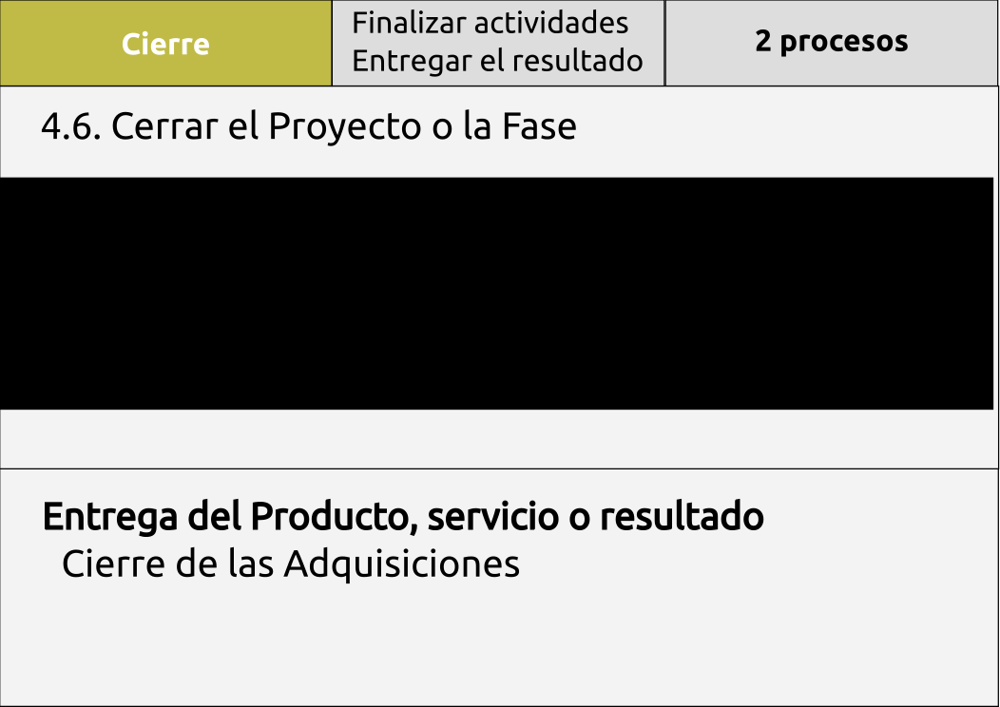Proceso de Control y Cierre
Qué
- Revisar y analizar el Rendimiento del Proyecto
- Informar del Rendimiento del Proyecto
Por qué
- Controlar la Triple Restricción
- Informar del Rendimiento del Proyecto
Cómo
Proceso de Control y Cierre
Revisar y analizar el Rendimiento del Proyecto
Informes creados por los Miembros del Equipo al Gestor de Proyecto
- Análisis de Variación
- Estado de Valor Ganado
- Auditoría de Riesgos
Proceso de Control y Cierre
Análisis de la Variación
- Informe de variación del Cronograma
- Informe de varianción del Coste
- Informe de variación de la Calidad
Elementos comunes a los 3 informes
- Resultados planificados
- Resultados reales
- Variación
- Causas Raíz
- Respuestas planificadas
Plantilla para el informe de Analisis de Variación
Proceso de Control y Cierre
Estado del Valor Ganado
Métricas matemáticas
- Valor Planificado
- Valor Ganado
- Coste Real
- Desviación del Programa
- Desviación del Coste
- Indice de Rendimiento del Programa
- Indice de Rendimiento del Coste
Plantilla para el informe de Valor Ganado
Proceso de Control y Cierre
Auditoría de Riesgos
- Auditoría de Eventos de riesgo
- Auditoría de Respuesta a Riesgos
- Proceso de Gestión de Riesgos
Plantilla para el informe de Auditoría de Riesgos
Proceso de Control y Cierre
Informe de Rendimiento del Proyecto
El informe se envía al Gestor del Proyecto o al esponsor
- Los datos se obtienen de los informes de estado del Equipo del Proyecto.
- Solo debe aparecer información de alto nivel
El informe contendrá
- Lista de objetivos alcanzados a fecha del informe
- Lista de objetivos planificados y no alcanzados a fecha del informe
- Causa raíz de las variaciones
- Impacto de las variaciones
- Acciones preventivas y correctivas planificadas
Plantilla para el informe de Rendimiento del Proyecto
Interacción delos Grupos de Procesos en el Proyecto
Gestión de Proyetos - Cierre
Por definición los proyectos tiene un inicio definidio y un final definido El proceso de Cierre lleva al Proyecto o la Fase a un final ordenado, de forma operacional y financiera
Los Procesos de Cierre deben activarse cuando
- El Proyecto se completa - en la fase final del proyecto, todos los proyectos deben tener un cierre formal al completarse
- Una Fase del Proyecto se completa - en función del tipo de proyecto algunas Fases deben cerrarse de manera formal o algunas actividades específicas de la Fase pueden darse por terminadas al final de la Fase
- El Proyecto se termina o se cancela
Gestión de Proyetos - Cierre
Los objetivos de Cerrar el Proyecto o la Fase son:
- confirmar la extensión con la que los Entregables se han completado y
- Los Objetivos del Proyecto / Fase se han cumplido
- Se ha obtenido aceptación formal de los Entregables
- Se confirma que los acuerdos de operación y mantenimiento siguen en marcha, de forma apropiada
- Se documenta los elementos extraordinarios y se recomiendan acciones de continuación, de forma apropiada
- Cierre / afianzación de todos los contratos
- Obtener las Lecciones Aprendidas
- Atar los cabos sueltos
- Preparar el Informe Final del Proyecto
- Comunicarse con todos los Inteeresados
Gestión de Proyetos - Cierre
El Cierre de una Fase o Proyecto conlleva:
- Presentar los Entregables e Informes finales
- Cerrar todos los contratos
- Llevar a cabo la revisión del Proyecto y capturar las Lecciones Aprendidas
- Concluir el Proyecto
- Celbrar el éxito
Gestión de Proyetos - Cierre
Entregables e Informes finales
- Verificar los Entregables / Resultados y evaluar el éxito del proyecto frente a los Objetivos del Proyecto
- Documentar los elementos extraordinarios y las acciones de continuación junto con el plan de complección, de forma apropiada
- Obtener la Aceptación / Aprobación del proyecto por parte de los Interesados tal como esté previsto
- Entregar toda la Documentación / Entregables al Cliente / Interesados
- Facilitar y asegurar la transición, el mantenimiento y la operación tal como se requiera
- Documentar las recomendaciones y pasos siguientes, si fuera necesario
- Preparar el Informe Final
Gestión de Proyetos - Cierre
Cierre de Contratos: incluye todas las actividades e interacciones necesarias para asentar y cerrar cualquier contrato que se haya establecido en el proyecto
Esto incluye
- Verificación del producto - Todo el trabajo se ha completado correctamente y de manera satisfactoria
- Financiaciones
- Cierre administrativo - Actualizar los registros de contratos para que reflejen los resultados finales y archivar la información para futuros usos
La finalización prematura de un contrato o proyecto es un caso especial de Cierre de Contratos
Gestión de Proyetos - Cierre
Concluir el Proyecto
- Archivar los documentos del Proyecto, los acuerdo y las aprobaciones, los contratos y las Lecciones Aprendidas
- Llevar a cabo evaluaciones de rendimiento del personal y liberar formalmente al personal para que puedan ser asignados a otros proyectos
- Devolver / Liberar todo el equipamiento que se ha usado en el proyecto
Responsabilidad Profesional
¿Qué es la Responsabilidad Profesional?
Las áreas de Responsabilidad Profesional consisten en lo siguiente:
- Asegurar la Integridad
- Equilibrar los intereses de los Interesados
- Contribuir a la Base de Conocimiento
- Respetar las diferencias
Código de Ética y conducta profesional - Principios destacados
Principios del Código de Ética
- Los practicantes de la Gestión de Proyectos tienen una gran responsabilidad ante sus clientes, otros Interesados y ante la profesión y deben apoyarse en su reputación para tener éxito
- Debe inspirar confianza ante el público en lo concerniente a la profesión de gestión de proyectos
- Debe proporcionar un marco a los profesionales para tomar decisiones justas ante dilemas éticos
- Debe establecer unas expectativas mínimas del público hacia la profesión
- Debe establecer un estándar mínino como marco para la profesión
Aplicabilidad y Futuro del código
Del PMP se espera, en todo momento, que sea honesto en la documentación de su experiencia, en las habilidades que dice tener y en el rendimiento de sus servicios
Los estándares de la industria son recomendaciones sobre cómo debe desarrollarse el trabajo, mientras que las regulaciones son requisitos sobre cómo debe desarrollarse el trabajo - el PMP debe conocer la diferencia – Joseph Philips
Desglose del Código: Los cuatro valores éticos más importantes
Responsabilidad
- Ser el responsable final de nuestras acciones mientras desarrollamos nuestras competencias como profesionales de la gestión de proyectos y en nuestro comportamiento en el lugar de trabajo y como voluntarios
Respeto
- Comportamiento ante los demás que promueva un ambiente de coperación y confianza
Justicia
- Comportamiento ante los demás que muestre que tomamos decisiones de manera imparcial y bajo criterios objetivos, por el bien común y no por favoritismos o intereses personales
Honestidad
- Decir siempre la verdad y actuar de manera fiable, sin ocultar información sobre la verdad que llevara a equívoco a otros
Muchas gracias...
Muchas gracias...